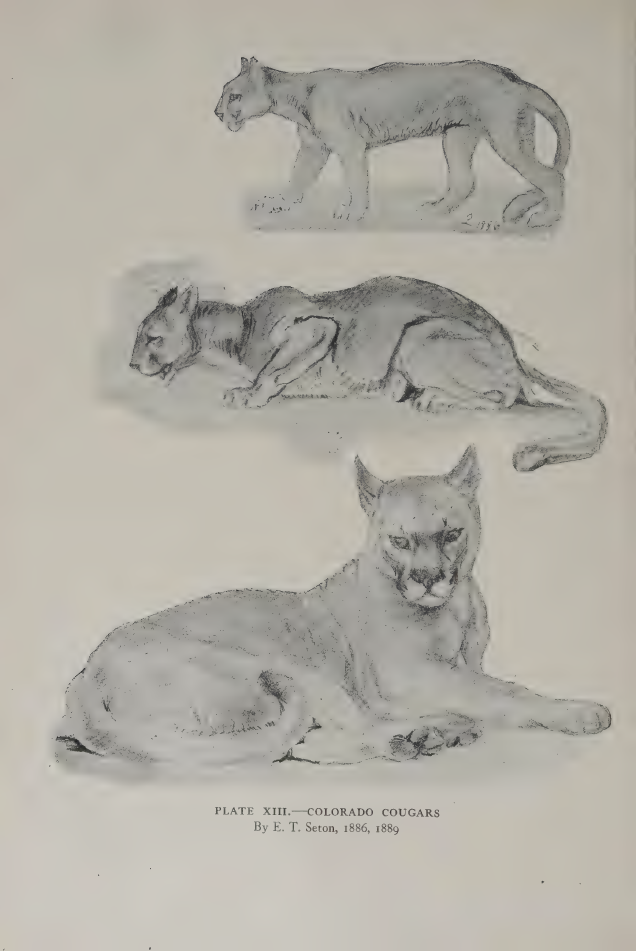

1. Find the naturalist-painter
Back to the tutorial. Sources: refs/lit/ in the study folder. Code: board.py, rig.py (the species table), coat.py (the docstring is Seton's colour notes).
The elk student built on Muybridge, and its board was calibrated against a frame-by-frame record of a real animal moving. When I went looking for the same thing for my animals, I found it didn't exist for one of them. That search, and what I built on instead, is the most transferable thing I learned.
First, check whether your Muybridge exists
Don't assume. UPenn has the 1887 Prospectus and Catalogue of Plates as a PDF. pdftotext -layout and a grep answer the question in a minute:
$ grep -n -i -E "lion|tiger|cat|puma|cougar|bear|jaguar|raccoon" cat.txt
716 Cat ; walking ; change to galloping 24
717 " trotting ; 20
719 " galloping 20
720 .. 24
721 Lion ; walking 9
727 Lioness ; walking ; lion ; lying down 12
729 Tigress ; 12
731 Jaguar ; A, walking ; B, turning around 24
744 Raccoon ; walking ; change to galloping 24
There are felids (good for the cougar) and a raccoon (the only plantigrade), and no bear in all 781 plates. For a bear's gaits I went to the biomechanics lab instead (how-to 3). For its form I needed something else.
Who the naturalist-painters are
Before cameras could freeze an animal, the people who knew animals best drew them, and a few of them wrote down how. For North American mammals the one to find is Ernest Thompson Seton (1860-1946). He trained as a painter in London and Paris, then spent his life as a naturalist. Three of his books are the system I built on, all public domain on archive.org:
| book | archive.org id | what it gave me |
|---|---|---|
| Studies in the Art Anatomy of Animals (1896), "for the use of sculptors, painters, illustrators, naturalists and taxidermists" | cihm_35627 |
the head-length canon; skeleton, muscle and proportion plates (cat, lion); measured tables for bears and cougars |
| Lives of Game Animals vol. I (1925): cats, wolves, foxes | livesofgameanima0001erne |
the cougar: sizes, colour, races (the Olympic olympus, "very dark"), kittens, behaviour; drawings from life, plates X-XVI |
| Lives of Game Animals vol. II (1926): bears and others | livesofgameanima0000erne_l3y9 |
the black bear: sizes, colour ("deep glossy black ... excepting the muzzle"), climbing, cubs; plate XVII and the silhouette vignettes |
The archive.org search and metadata APIs tell you in one request whether a scan is open (access-restricted-item) and which files it has:
curl -s "https://archive.org/advancedsearch.php?q=title%3A%28lives+of+game+animals%29+AND+creator%3A%28seton%29&fl%5B%5D=identifier&fl%5B%5D=title&fl%5B%5D=volume&rows=40&output=json"
curl -s "https://archive.org/metadata/livesofgameanima0001erne" # -> files: .pdf, _djvu.txt, _jp2.zip
Read the text with grep, find the plates with contact sheets
Each book is 200-800 pages. Download the _djvu.txt (the OCR layer) and grep it for the chapter and for its words: Size., Colour., climb, hind legs, spotted. That's how I found every quote on these pages in minutes. The OCR is rough (LIFE ХХ--ТНЕ BLACKBEAR, with Cyrillic letters), so grep loosely.
The plates don't survive OCR. To find them, render the chapter's page range tiny and tile it:
nice pdftoppm -r 18 -f 80 -l 195 -gray livesofgameanima0001erne.pdf c # ~1 KB per page
fs = sorted(glob.glob('/tmp/seton/c-*.pgm'))
ims = [Image.open(f) for f in fs]
w = max(i.width for i in ims); h = max(i.height for i in ims); cols = 16
for s in range(0, len(ims), 64):
chunk = ims[s:s + 64]; rows = (len(chunk) + cols - 1) // cols
sheet = Image.new('L', (cols * (w + 4), rows * (h + 14)), 255); d = ImageDraw.Draw(sheet)
for k, (im, f) in enumerate(zip(chunk, fs[s:s + 64])):
x = (k % cols) * (w + 4); y = (k // cols) * (h + 14)
sheet.paste(im, (x, y + 12)); d.text((x, y), f.split('-')[-1][:-4], fill=0) # the page number
sheet.save(f'/tmp/seton/sheet_c_{s}.png')
Pages of text are grey rectangles. Plates stand out at a glance, labelled with their page numbers. Render those pages again at 110-200 dpi.

nb005 (the bear chapter, vol. II, 18 dpi). The plates are the pages with pictures.
What to take from him
1. The canon: proportion in head-lengths
The Art Anatomy measures animals the way figure drawing measures people:
The Grizzly, Brown, and Black Bears go in a square of two heads. The neck is three-quarters of a head long, the width at the shoulders one head, and at the trochanters three-quarters of a head. [Footnote:] The arch of the back, however, rises considerably above the line.
A Dog goes in a square of 3 heads, / A Lion goes in a rectangle of 2½ heads in height by 3 heads in length. / A Cat goes in a rectangle of 2½ heads in height by 3½ heads in length.
[The cougar] is simply a large Cat of extraordinary agility and suppleness. In all its proportions and anatomy, it agrees with the Cat.
Plus the cat's measurements: shoulder height half the total length, the tail half the total length. And one line I wouldn't have thought to look for: "whatever be the figure that includes the animal's body, the same figure of but half the dimensions usually appears in the space that is comprised by the belly, legs, and ground". That puts the belly at half the shoulder height.

nb019. Plate XXVII, The Proportions of the Lion. The scapula, humerus, radius, femur and tibia are each about one head; the metatarsus three-quarters; the belly at half height. The cat and cougar share these ratios.
How the canon shows up in the rig: the species table is written in shoulder heights, and head size, limb lengths and belly height come from the canon. To check, I measured the finished rig while writing this page:
bear head 0.52 H shoulder = 1.93 heads (Seton: 2) back top 1.05 H (the arch above the square)
cougar head 0.41 H shoulder = 2.41 heads (Seton: 2.5) torso 1.44 H = 3.5 heads (Seton: 3.5)
"cougar": Species(
name="cougar", H=0.66, torso=COUGAR_TORSO, # chest floor 0.50 H: half the height (the canon)
head_len=0.28, head_r0=(0.135, 0.125), ... # + the cranium behind the axis: 0.41 H of visible head
fore_len=(0.28, 0.36, 0.10, 0.075), # humerus, radius, metacarpal, digits
hind_len=(0.30, 0.40, 0.27, 0.08), # femur, tibia, metatarsus, digits
tail_len=1.30, ...), # 1.3 H of tail: about half the total length
Heights survived the board almost exactly. Lengths did not, and the next section is why.
2. The measured tables, and when not to believe them
Lives of Game Animals is full of measured animals:
A fair-sized and fat ♀, shot in Colorado, measured as follows: Snout to tail-tip, 63½ in. (1,613 mm.); tail, 5 in. (127 mm.); hind foot, 7¼ in. (184 mm.); height at shoulders, 25½ in. (648 mm.).
Taken straight, that's 2.3 shoulder heights from snout to rump. My board against a living bear walking at Whistler wanted 1.7. The table isn't lying. A shot bear laid on its side and measured along its contour is longer than a standing one, and Seton says so himself about cougars: "I find many records ... that show much greater dimensions, but the measurements were apparently taken on the stretched skins." So I took heights, foot lengths and ratios from the tables and lengths from the board. Masses, litter sizes and dates from the tables went to the sim programmer (notes/observation.md).
3. The colour notes become coat regions
His colour descriptions are written for painters, and they turned into coat.py almost line by line. The module's docstring is the transcription:
"""
Black bear (westside, black phase): glossy black all over; a brown-to-tan muzzle (the "brown
nose" of the black bear, the only warm patch on the animal and the one that says which way the
head points); a white chest blaze on some individuals ...
Cougar: uniform tawny, "a pale yellowish sandy brown" (westside, Felis concolor olympus, "very
dark in colour"); pale cream belly, inner legs, chin, throat and upper lip; a black spot at the
base of the whiskers; the backs of the ears dark with a lighter centre; the tail tip nearly black
... Kittens: yellowish brown with black spots and a ringed tail till about 6 months. [Seton 1925, 1896]
"""
The brown muzzle mattered most. Seton names it as the one exception to the bear's black, and at 6 px it becomes the one pixel that tells you which way the bear faces (how-to 5).
4. The drawings from life go on the board
This is the part I'd push hardest. The naturalist's cougar photo sheet was zoo and taxidermy. Seton's plates are cougars he watched in Colorado and Central Park, drawn side-on on purpose by a man who knew the skeleton under them. I cropped two onto my board as references, exactly as I'd use a photo:
nice pdftoppm -r 200 -f 105 -l 105 -png livesofgameanima0001erne.pdf /tmp/seton/p105
im = Image.open('/tmp/seton/p105-105.png'); w, h = im.size
im.crop((0, int(h * 0.47), w, int(h * 0.93))).save('board/seton_cougar_standing_plXII.png')
BOARD = [
# file, crop, ground row, withers row, (species, sex), gait, phase, yaw, label
(NAT + 'black_bear/openverse_Black_bears_in_Whistler_Olympic_Park_af309806.jpg', (320, 240, 820, 560), 510, 290,
('bear', 'm'), 'walk', 0.12, 12, 'black bear walking, Whistler (GoToVan, CC BY)'),
(REF + 'board/seton_cougar_standing_plXII.png', (40, 100, 1060, 700), 600, 228,
('cougar', 'f'), 'alert', 0.0, 0, 'cougar standing, Seton pl. XII, from life'),
(REF + 'board/seton_cougar_walking_plXIII.png', (20, 20, 720, 340), 325, 80,
('cougar', 'f'), 'walk', 0.55, 180, 'cougar walking, Seton pl. XIII, 1886'),
...
]


nb012, nb011. Plate XII, cougar studies (the lower one is on my board); plate XIII, Colorado cougars (the top one, walking, is on my board). Both from life, 1886-1890.


nb025, study. The notan board, first and final. Rows 2 and 3 are Seton's drawings. Everything the cougar lost between them came off his pencil lines: the horse head, the short bent legs, the tail lying on the ground.
He also drew the poses I needed and had no photographs of. A bear sitting like a person, rearing, lying and climbing (plate XVII). Cougars crouched, stalking and lying (plate XV). And a page of bears in pure black silhouette, which is what a small figure should be:


nb006, nb010, nb007. Plate XVII, blackbear poses; plate XV, pen sketches of cougars; the vignette on p. 118, bears as notan.
5. Behaviour, in his words
He's often the only source for how an action looks. On a bear climbing: "more like the action of a Cat. It had not the spring and agility of a Squirrel or Marten, but this Bear went up twice as fast as any man could ... In coming down, he travels tail first." And, quoting R. N. Pemberton: "He does not climb straight up, but circles around the body of the tree with a series of leaps, ascending corkscrew fashion." That's a pose brief.
How to find yours
I'll be honest about my search: Muybridge's catalogue said no bear, and I already knew Seton's name as the naturalist-painter of North American game animals, so my first search was for his books by name. What made him the right system rather than just a famous name was the Art Anatomy's subtitle, "for the use of sculptors, painters, illustrators", and the tables inside it. The pattern generalises. For birds it would be Audubon and the bird-illustration guides; for fish, the plates of the old fisheries surveys (the salmon student went looking for those). Look for someone who:
- measured the animal in units a painter can use (heads, not millimetres);
- drew it side-on, from life, on purpose;
- wrote colour for the eye, not for a key ("the tip of the tail nearly black").
I added Seton and the felid Muybridge plates to the studio library README.
Where it stops
- Seton's drawings are pencil and ink, so they tell you nothing reliable about value. The cougar's value came out far too light, and a critic, not Seton, caught it (how-to 4).
- He drew few bears side-on standing. The bear's board reference is a photograph.
- He isn't a gait source. A drawing is one moment, and he rarely says which moment of a stride it is. For gait you need Muybridge or a force plate.
- The tables were taken from dead animals. Use them for ratios, heights, masses and dates, not lengths.